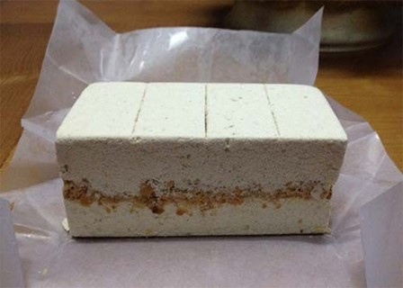
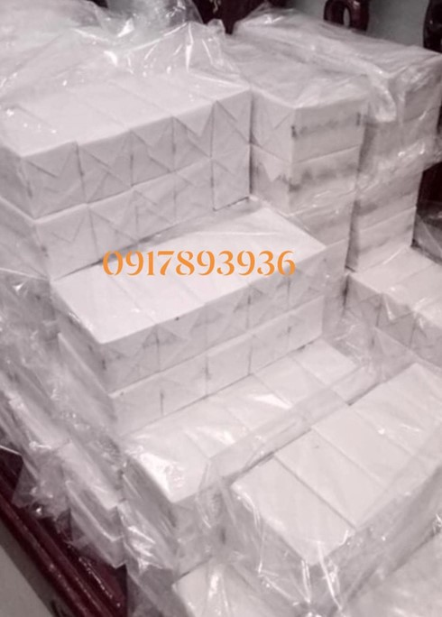
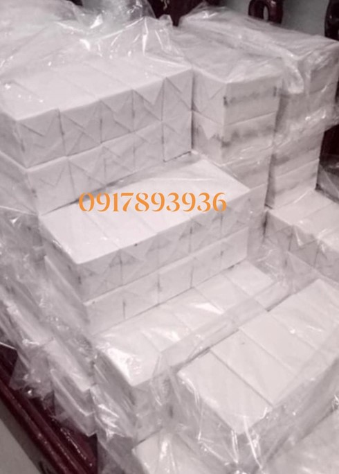
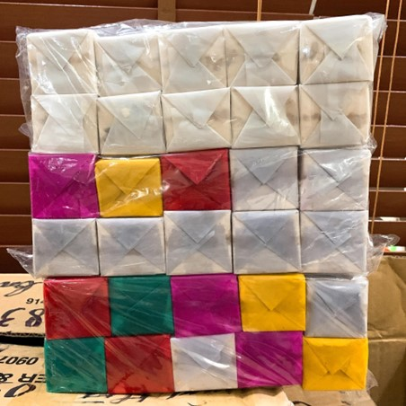

Bánh khảo
Bánh khảo là đặc sản Cao Bằng ăn vặt vô cùng hấp dẫn, nhiều khách du lịch Cao Bằng chỉ một lần ăn mà nhớ mãi bởi độ thơm ngon thanh ngọt. Người Cao Bằng kĩ càng trong việc làm nên một chiếc bánh ngon từ việc chọn nguyên liệu đến các công đoạn làm bánh đều rất khéo léo, tỉ mỉ và công phu.
Gạo làm bánh là loại gạo nếp ngon, thơm, hạt tròn và mẩy. Gạo mua về đãi sạch sau đó được rang giòn, sau đó say mịn. Bột sau khi say được ủ lại để bột quyện vào nhau hơn.
 

Đường dùng để làm bánh khảo có hai loại: đường kính hoặc đường phèn. Bất kể dùng loại đường nào thì cũng phải được giã thật mịn, để khi trộn với bột mới tạo được độ kết dính cao.
Phần nhân bánh gồm có lạc, vừng và thịt mỡ. Sau khi làm xong bột và nhân bánh, sẽ tiến hành nén để bánh có hình chữ nhật, kích cỡ to nhỏ hay độ dày mỏng tùy theo người làm. Đây cũng là món quà được nhiều khách du lịch Cao Bằng lựa chọn mua về.